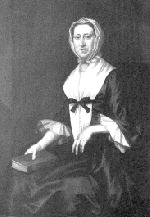

|
by Stefan Bielinski Catharina Van Brugh was born in 1689 the only child of Manhattan trader Pieter Van Brugh and Sara Cuyler. Within a few years, Catharina's parents followed the Cuylers to Albany where they too found success in fur trade-related business.  Catharina grew up in the new city of Albany where her father was appointed mayor in 1699. As the only heir of wealthy and advantaged parents, in September 1708 nineteen-year-old Catharina was married to Philip Livingston - eldest son of the most important personage in the entire region. Three months later, the first of her twelve children was baptized in the Albany Dutch church. A year or two younger than most Albany brides, her family was larger than most with the last child born in 1733 when Catharina was forty-three-years-old. These Livingstons moved into the landmark Livingston home on the Elm Tree Corner. For several decades Catharina and Philip were Albany mainstays with their numerous offspring growing up and succeeding to places of prominence throughout the colonies. As Philip's public and personal business took him more to New York and to the Manor, Catharina managed the Albany home and its business. Their forty-year marriage ended when Philip Livingston died in New York City in February 1749.
Catharina inherited substantial property. She filled the years that followed with family and friends from Albany to New York. She died suddenly on February 20, 1756 while visiting in New York City. She was in her sixty-seventh year and was mourned by her children as the "best of mothers." Other family members called her "a good woman" and noted for her "sweetness of temper and good sense."
This Portrait by John Wollaston was painted in 1752. For many years, it was thought to be of Catharina's mother-in-law, Alida Schuyler Van Rensselaer Livingston. In a private collection. Copied from Piwonka, Portrait of Livingston Manor, 33. 10/30/1710 - Pieter baptized 4/20/1712 - Pieter baptized 4/11/1714 - Johannes baptized 1/16/1717 - Philip baptized 4/5/1719 - Hendrick baptized 5/7/1721 - Sara baptized 12/8/1723 - William baptized 11/7/1725 - Sara baptized 8/18/1728 - Alida baptized 11/5/1730 - Pieter baptized 4/15/1733 - Catharina baptized |